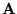
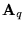
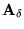
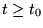

|
You are here : Control
System Design - Index | Book Contents |
Chapter 17
17. Linear State Space Models
Preview
We have seen that there are many alternative model formats that can
be used for linear dynamic systems. In simple SISO problems, any
representation is probably as good as any other. However, as we move to
more complex problems (especially multivariable problems) it is
desirable to use special model formats. One of the most flexible and
useful structures is the state space model. As we saw in Chapter 3, this
model takes the form of a coupled set of first order differential
(or difference) equations. This model format is particularly useful with
regard to numerical computations.
State space models were briefly introduced in Chapter 3. Here we will
examine linear state space models in a little more depth for the SISO
case. Note, however, that many of the ideas will directly carry over to
the multivariable case presented later. In particular, we will study
- similarity transformations and equivalent state representations
- state space model properties
- controllability, reachability and stabililizability
- observability, reconstructability and detectability
- special (canonical) model formats
The key tools used in studying linear state space methods are linear
algebra and vector space methods. The reader is thus encouraged to
briefly review these concepts as a prelude to reading this chapter.
Summary
- State variables are system internal variables, upon which a full
model for the system behavior can be built. The state variables can
be ordered in a state vector.
- Given a linear system, the choice of state variables is not
unique. However,
- the minimal dimension of the state vector is a system
invariant,
- there exists a nonsingular matrix which defines a similarity
transformation between any two state vectors, and
- any designed system output can be expressed as a linear
combination of the states variables and the inputs.
- For linear, time invariant systems the state space model is
expressed in the following equations:
- Stability and natural response characteristics of the system can
be studied from the eigenvalues of the matrix

(
,
).
- State space models facilitate the study of certain system
properties which are paramount in the solution control design
problem. These properties relate to the following questions
- By proper choice of the input u, can we steer the
system state to a desired state (point value)? controllability
- If some states are or uncontrollable, will these states
generate a time decaying component? (stabilizability)
- If one knows the input, u(t) for ,
can we infer the state at time t=t0 by
measuring the system output, y(t) for ?
(observability)
- If some of the states are unobservable, do these states
generate a time decaying signal? (detectability)
- Controllability tells us about the feasibility to control a plant.
- Observability tells us about whether it is possible to know what
is happening in a given system by observing its outputs.
- The above system properties are system invariants. However,
changes in the number of inputs, in their injection points, in the
number of measurements and in the choice of variables to be measured
may yield different properties.
- A transfer function can always be derived from a state space
model.
- A state space model can be built from a transfer function model.
However, only the completely controllable and observable part of the
system is described in that state space model. Thus the transfer
function model might be only a partial description of the system.
- The properties of individual systems do not necessarily translate
unmodified to composed systems. In particular, given two systems
completely reachable, observable, controllable and reconstructible,
their cascade connection:
- is not completely observable if a pole of the first system
coincides with a zero of the second system (pole-zero
cancellation),
- is not detectable if the pole-zero cancellation affects an
unstable pole,
- is not completely controllable if a zero of the first system
coincides with a pole of the second system (zero-pole
cancellation), and
- is not stabilizable if the zero-pole cancellation affects a
NMP zero
- this chapter provides a foundation for the design criteria which
states that one should never attempt to cancel unstable poles and
zeros.
|